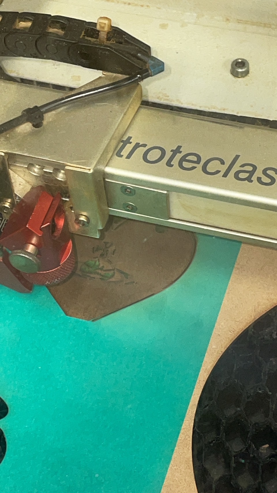
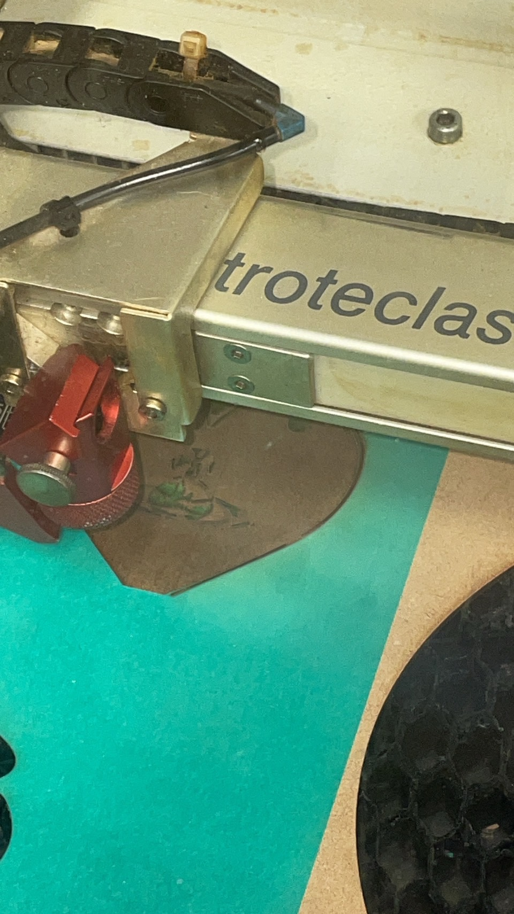

デジタルファブリケーション
第2回 レーザーカッター
キーホルダー
自分の好きなブランドのロゴをキーホルダーにしました。

~途中経過~
 

模様部分はくりぬいて右上にストラップを通せる穴をあけました！

感想
レーザーカットしているとき可愛いしか言えなかった、、、
モード系にしたかったのでレーザーカッターの火力と火を当てる時間を長くして暗い色に近づけました。今回は木材をカットしたがほかの素材でも色々作ってみたいです！
当初自分が作りたいと思っていたものとは変わってしまったので,個人的にファブラボを利用して作ろうと思います！